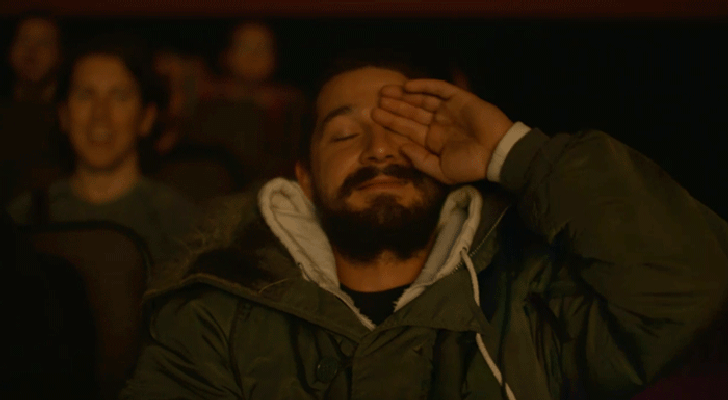

DEC 07, 2025 • 3 MIN READ
My View on Movies
The moment the opening credits start, we are ready to journey into another world. This is the world where we become observers, watching from the stars, able to take the perspectives of multiple characters and experience the full spectrum of their emotions. We feel the innocence of Baahubali, the crushing grief of John Wick, the freedom of Jack Sparrow, or the unyielding courage of Harry Potter.
The Heart of the Connection
Liking a movie is, fundamentally, based on personal interest and how strongly we connect to the emotions portrayed on screen. This connection is subjective. A viewer might deeply love the sweeping political drama of Game of Thrones but find little interest in the moral complexities of Breaking Bad. Despite both being top-tier shows, the ultimate enjoyment comes down to the individual watching them. Our preferences guide us to the stories that speak to our own lives and desires.
Beyond Preference
While personal interests play a major role, sometimes we find ourselves loving movies that fall outside our usual scope. The reasons for this shift are often rooted in the craft of the performance.
A character might be written with an awesome role on the script, but if the actor or actress cannot portray those emotions with conviction, the potential impact is lost. The screenplay provides the blueprint, but the actors provide the soul.
Conversely, the sheer effort and skill of a performer even a side actor can elevate a film beyond its flaws. A deeply convincing portrayal can bring back a not-so-great script, transforming what might have been a flop into a watchable, or even memorable picture. The actor’s ability to embody grief, joy, or rage makes the emotion impactful, forcing us to lean in and connect despite our initial interest about the genre or story.
The Director’s Symphony
Beyond the performance, a satisfying cinematic experience is shaped by the subtle, powerful choices of the director and cinematographer. The entire atmosphere is carefully adjusted to amplify the emotional journey:
- The Language of Color: Notice how the color palette of a movie resonates with the underlying emotion. A washed-out, cool blue or grey filter can immediately evoke feelings of loneliness (think of crime thrillers), while warm, vibrant golden hues suggest hope, love, or nostalgia. These visual cues work on a subconscious level, guiding our emotional response before a single line is spoken.
- The Power of the Camera: Similarly, camera movements are crucial tension builders. A handheld camera that slightly shakes or sways often conveys urgency, confusion, or increasing fear, making the viewer feel physically present in the chaos. Conversely, a slow, focused zoom-in on a character’s face intensifies a moment of realization or increasing threat, compelling us to focus on the rising emotional stake.
- The Emotional Blueprint of Music: Perhaps the most direct route to the viewer’s emotion is the music and background score (BGM). The score is the film’s emotional compass. It doesn’t just accompany the scene; it often dictates how we should feel about it. A person with little initial interest in a movie can be immediately captivated if the BGM is exceptional. With an exceptional background music we can make a simple walk across a room feel epic. The music tells us whether a character’s silence is one of deep sorrow or increasing anger, making the emotional impact impossible to ignore.
A Spectrum of Feeling
When all these elements, the committed acting, the carefully chosen lighting, the precise camera work align, the viewer experiences a rich and layered emotional event.

We may feel the sharp adrenaline of a chase, the quiet profound peace of a resolution, the bitter taste of betrayal, or the warm hopeful love. These intense feelings, often experienced safely from a distance, are what make the journey so satisfying.
It proves that while we may start with our own interests, the true power of cinema lies in its ability to override those preferences, pulling us into stories we never expected to care about, simply because the feeling of, undeniable emotional truth delivered by the actors, colors, and camera is so compelling.